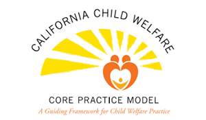

Message from Executive Director Virginia Rondero Hernandez
The California Child Welfare Core Practice Model: An Overview
May 25, 2017
Dear CalSWEC Community,
In 2012, California’s child welfare practice community initiated a collective effort to improve its service delivery system and outcomes for the children, youth, and families it serves.
On behalf of the County Welfare Directors Association and in partnership with the California Social Work Education Center (CalSWEC) at UC Berkeley, the Child and Family Policy Institute of California (CFPIC) has facilitated a process designed to gain valuable feedback from county, community, and Tribal partners about how best to leverage the achievements of existing and emerging programs and practices and to develop an overarching practice model that can be used by all California county child welfare agencies to improve services and outcomes to the children and families they serve.
Providing an Overarching Framework
The California Child Welfare Core Practice Model (CPM) builds on the strengths and outcomes of previous initiatives adopted across the state, including Family to Family, the California Partners for Permanency (CAPP) project, Safety Organized Practice (SOP), and the Pathways to Permanency program (based on the Katie A. Settlement Agreement) all of which share the common goals of improving safety, permanency, and well-being of children and families involved with child welfare agencies. The CPM functions as a “house” for these and other practices and programs by providing an overarching theoretical framework that guides and builds upon the collaborative and interactive practices social workers use with children, youth, and families.
The framework of the CPM features several theories that help child welfare workers and leaders better understand those they serve and engage; social workers are familiar with most of them. This framework includes:
- orienting theories related to historical trauma, attachment, and cultural differences;
- bio-developmental theories that lend insight into the lifespan development and life transitions of children, youth, and families;
- intervention theories that address when and how to intervene in order to address and sustain the safety, permanency, and wellness of children, youth, and families; and
- organizational theories that further understanding about what is needed at the agency level to support and sustain the Model.
It also features values that guide the implementation of casework components that promote collaborative interactions with clients and practice elements that can be operationalized by social workers in their practice.
A distinctive set of features of the CPM are the foundational behaviors, practice behaviors, and leadership behaviors assumed to be key to creating an environment that is conducive for its implementation in county child welfare agencies. The majority of these behaviors are already included in social work curricula.
RELATED: Read more about California Child Welfare Core Practice Model
Foundational behaviors include being willing to engage in open, honest, clear, and respectful communication, and to be held accountable for one’s practice and leadership. Practice behaviors reflect fundamental elements taught in social work practice courses, including engagement, assessment, teaming, service planning/delivery, and case transitions.
Leadership behaviors also reflect elements of macro social work practice, including engaging colleagues and stakeholders in a supportive manner; inquiring and exploring how best to lead; teaming with colleagues, community partners, and other stakeholders to implement the Model; advocating for inclusive processes and culturally responsive services to clients; and eliciting feedback about how to hold all parties accountable for the implementation, evaluation, and policy changes needed to sustain the CPM in an agency.
Engaging Child Welfare Leaders in Adoption of CPM
The collective effort to improve child welfare services delivery and outcomes for children, youth, and families has resulted in the adoption of the CPM by county child welfare agencies across the state and a commitment to learn what it takes to effectively implement a practice model that produces the intended results and beneficial outcomes for those they serve. In order to support this statewide agreement and commitment, the CFPIC, CalSWEC, and national experts on implementation science are partnering to host leadership institutes across the state over the next year for child welfare directors, managers, and supervisors.
The objectives are to:
- demonstrate how the CPM aligns with existing agency practices and programs, such as SOP, structured decision making (SDM), and the Pathways to Permanency program, as well as emerging ones like the Continuum of Care Reform (CCR) and the Resource Family Approval process (RFA) currently being implemented by child welfare agencies across the state;
- engage child welfare leaders in learning about the principles of implementation science; and
- identify what agencies must do to leverage effective implementation of the CPM to achieve its intended outcomes.
The institutes also provide the opportunity for child welfare leaders to assess and propose suggestions about how best to engage social workers, agency personnel, and community partners in the adoption of the CPM in order to produce the intended changes. A fundamental and egalitarian element of the CPM is that leadership lives at all levels of an agency, even though levels of responsibility and accountability differ.
Potential for Producing Profound Change
The CPM, whose “roll-out” is occurring as we speak, will continue to influence the way social workers and child welfare services leaders practice as time goes on, be it at the micro, mezzo or macro level. It has the potential to produce profound change by building on the strengths of county child welfare programs, creating a house for existing and emerging practices and programs, and aligning them so that they strive for similar outcomes for the children, youth, and families they serve.
To ensure continuity in learning, the Model’s basic concepts have been woven into the fabric of the recently rolled-out Child Welfare Core Curriculum 3.0 for the state’s in-service training program, providing that the practice of newly hired social workers is informed by this new fundamental approach to child welfare work throughout California.
Special thanks to Stuart Oppenheim and Danna Fabella from CFPIC for contributing to this message.
Virginia
Virginia Rondero Hernandez
Executive Director and Principal Investigator, CalSWEC